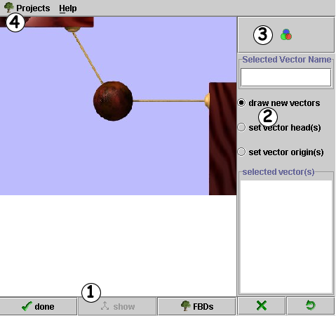
| Finished Drawing FBD: When you have finished drawing and labeling forces, press this button. | ||
| Show the Correct FBD: If you have pressed the done button (), the Show Correct FBD button will become active. By pressing this button you can see displayed a correct version of the FBD. | ||
|
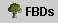
|
Show Choices: This button opens a panel of possible choices for which you can prepare a Free Body Diagram. Each of the small images is a button. Press it and that image loads in the main drawing panel. You can change images at any time by pressing this button. | 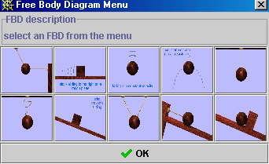 |
| Delete selected vector: Press this button to remove a vector. The vector that will be removed is the either the one you are currently drawing or the one you activate by clicking on the vector in the text area which contains lists the vectors that have been drawn. In the figure shown here, vector 3 has been selected. You can now delete it by pressing the delete button.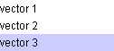 | ||
| Reset: If you wish to remove all of the vectors press this button. | ||

This panel presents
you with 3 options. All of these are things that you can do to the vectors
that you have drawn.
|
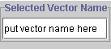
|
Selected vector name provides you with a text box in which you can type the name of the vector (rather than the default labels of vector 1, vector 2, etc.). |
|
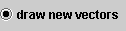
|
This is the "default" selection. When you first run the applet, anytime you click and drag the mouse in the drawing panel, a vector is created. You can point the vector in any direction and change its length at will. As soon as you release the mouse the vector becomes fixed in both length and direction. If you wish to modify this vector then you must select one of the two remaining options listed below. |
|
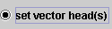
|
Set vector head(s) allows you to rotate the vector to a new direction without changing its length. |
|
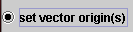
|
Set vector origin(s) allows you to move the vector to a new position without changing its direction. |
|
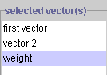
|
The list of vectors that you have made and the names that you have given them appear in this area. You can change the name of a vector at any time by clicking on the vector in this box and then typing a new name in the Selected Vector Name text box above. |

| Press the color icon to change the color of the active vector (In the previous section, for example, "weight" appears highlighted so it would be the active vector.) By using the color editor you can change the vector "weight" to any color you wish. |
| 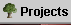 | When you press this button a menu opens that lists possible projects or sets of images that you can select from. If, for example you wish to select the project labeled "Sample Project", just click on the radio button with this name. This loads the image set from that project and you access the images by pressing the FBD's button ( ) as discussed above. | 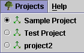 |